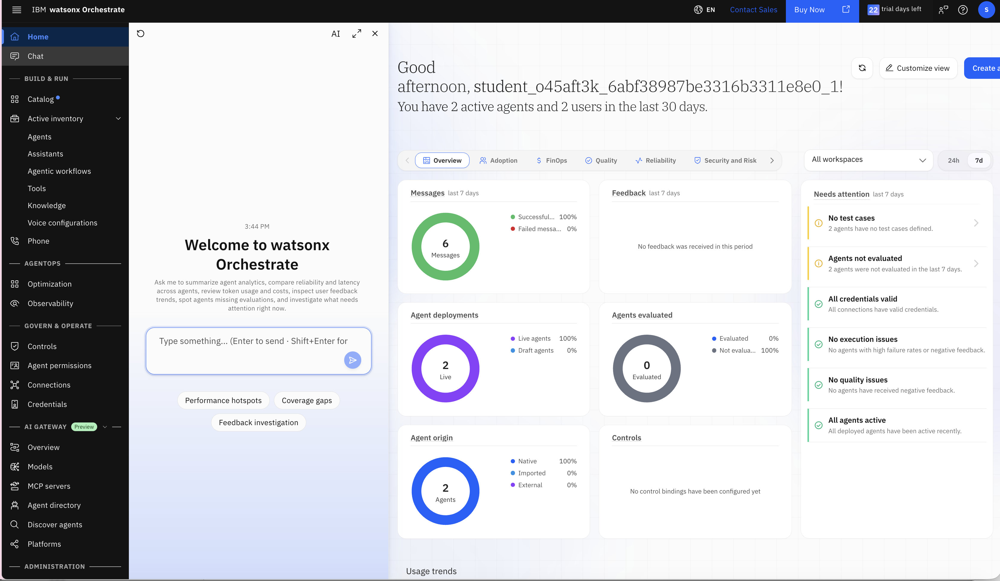
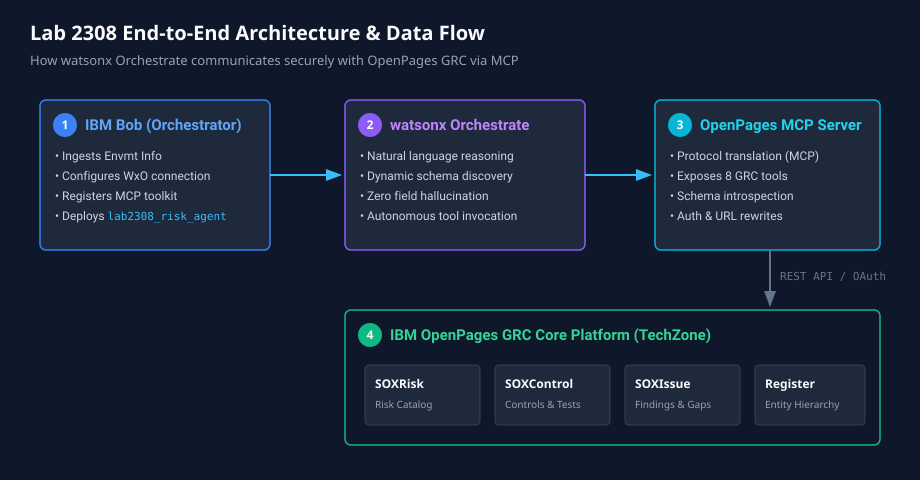

0 Prerequisites — Key Information You Need for This Lab
Your instructor will display credentials on the projected screen — or hand you a printed sheet. Bob needs three values, marked with ★ below. Only one is on the sheet: the other two you copy or create yourself in IBM Cloud (steps 0.4 and 0.5).
0.1 Find Your Three Values — Instructor Sheet and IBM Cloud
Look for the ★ starred lines — those are the only three things you'll paste into Bob:
============================================================ IBM TechXchange 2026 — LAB-2308 · YOUR ENVIRONMENT INFO ============================================================ ── PART 1 — IBM Cloud / watsonx Orchestrate (WxO) ────────── App ID Login URL https://cloud.ibm.com/authorize/<tenant_id>/<slug> ← log in to IBM Cloud App ID Username student<N>@<tenant_id>.techzone.com App ID Password <your password> (NOT on the sheet — you copy these from IBM Cloud yourself) ★ WXO INSTANCE URL (copy it, step 0.4) ← give this to Bob (Question 2) https://api.ca-tor.watson-orchestrate.cloud.ibm.com/instances/XXXX (example of what it looks like) ★ IBM CLOUD API KEY (create it, step 0.5) ← give this to Bob (Question 3) AbCdEfGhIjKlMnOpQrStUvWxYz0123456789AbCd_-x (example of what it looks like) ── PART 2 — OpenPages / watsonx.governance (WxGov) ───────── watsonx.Gov Application URL https://wxgov-govconsole-demo-XXXX.vsi.techzone.ibm.com/openpages ★ MCP SERVER URL ← give this to Bob (Question 1) https://wxgov-govconsole-demo-XXXX.vsi.techzone.ibm.com/mcp OpenPages Login ask your instructor for credentials
You do not need to edit any files, run any commands, or touch any YAML. Bob handles everything once you give him those three values. Only the MCP Server URL is on the instructor sheet; you copy the WxO Instance URL from IBM Cloud (step 0.4) and create the API key in IBM Cloud (step 0.5).
0.2 Log In to IBM Cloud
Open a Private / Incognito browser window. Find the App ID Login URL on the instructor screen or printed sheet (under PART 1) and paste it into your browser. Enter the App ID Username and App ID Password from the same section, then click Sign in.

0.3–0.4 Open Your WxO Instance & Copy the URL from IBM Cloud
Go to cloud.ibm.com/resources → AI / Machine Learning → click your watsonx Orchestrate instance.
You will land on the page shown below. The WxO Instance URL is not on the instructor sheet — you copy it from the Credentials box here.

-
In the Credentials box, click the copy icon to the right of the URL field. Use the copy icon rather than selecting the text — the field is too narrow to show the whole URL.
It starts withhttps://api.…watson-orchestrate.cloud.ibm.com/instances/…and its region (for exampleca-tor) may differ from the example — paste exactly what IBM Cloud gives you.
This is your ★ WXO INSTANCE URL. Save it — Bob will ask for this. - Then click the blue Launch watsonx Orchestrate button to open your WxO workspace.
The API key in the Credentials section here is not what Bob needs. Bob needs an IBM Cloud API key that you create yourself under IAM → API keys — see step 0.5 below.
0.5 Create Your IBM Cloud API Key for Bob
This is not the key created when you create the Service ID, and not the API key on the WxO instance page. The right one is created under IAM → API keys, which is its own separate page:
- In IBM Cloud, click Manage in the top navigation bar, then Access (IAM).
- In the left-hand menu, click API keys.

- Click Create +, enter a name (for example
Lab 2308 API Key), keep the defaults, and click Create.

- Copy the key value immediately (it is only shown once).
This is your ★ IBM CLOUD API KEY. Save it — Bob will ask for this.
0.6 Find Your MCP Server URL for Bob
On the instructor screen or printed sheet, find the line labelled ★ MCP SERVER URL (under PART 2). Copy the full URL including https://.
Take the watsonx.Gov Application URL from PART 2 and change /openpages at the end to /mcp. That's your MCP Server URL.
0.7 Log In to OpenPages (for Module 2)
Find the watsonx.Gov Application URL on the instructor screen or printed sheet (under PART 2) and open it in your browser. You'll see a TLS warning (TechZone uses a self-signed certificate) — click Advanced → Proceed to wxgov-govconsole… (unsafe). Log in with the credentials your instructor provides.

1.0 Module 1 — Start Here: Talk to Bob
You will set up everything through a short conversation with Bob. No terminal, no YAML editing, no scripting.
1.1 Open IBM Bob
IBM Bob is an application installed on your lab machine (it does not run in a browser).
Option A — Desktop icon: double-click the IBM Bob icon on your desktop.
Option B — No icon on the desktop (Windows):
- Click the Start button (Windows logo, bottom-left of the screen) or press the Windows key.
- Type Bob — or click All apps and scroll to IBM Bob.
- Click IBM Bob to launch it.
1.2 Sign In with Your IBM ID
After Bob launches, click Sign in and log in with your IBM ID (the same email you used to register for TechXchange).
1.3 Select the Lab Team
Bob must be using the lab team before it can run the lab setup.
- Click the gear icon in the top-right corner of the Bob panel to open Bob Settings.
- In the left menu, select General.
- Next to Team, open the dropdown and select the lab team:
IBM-TechXchange-2026 (region: us-east). (Your instructor will confirm if the team is named differently, for exampleLab-2308.) - Confirm the checkmark is next to the lab team.

The screenshot shows IBM Internal checked — that is the default. Change it to the lab team. If you don't see the lab team in the list, sign out of Bob and sign in again; if it's still missing, ask an instructor.
1.4 Check Your Python Version
Bob needs Python. Bob checks this for you automatically and installs it if it's missing, but it's worth confirming yourself:
| Platform | Check |
|---|---|
| Windows | Open the Start menu, search Command Prompt, run python --version. If that fails, try py --version. |
| macOS | Open Terminal (Cmd + Space, type Terminal, press Enter) and run python3 --version. |
You should see Python 3.14.3. Any Python from 3.11 to 3.14 also works. If Python is missing, just continue — Bob will install it for you in the next step (about 2 minutes).
1.5 Get the Lab Files
Download the lab folder to your machine — no git required.
- Click the button above — your browser will download
lab-2308-main.zip. - Open File Explorer (Windows) or Finder (macOS) and locate the downloaded ZIP in your Downloads folder.
-
Unzip it — right-click the ZIP → Extract All… (Windows) or double-click (macOS).
You will get a folder calledlab-2308-main. Move it somewhere easy to find, for example:
C:\Users\YourName\Documents\lab-2308-main
If you have git installed, you can also run:
git clone https://github.com/haneen-bakbak/lab-2308.git
Either way works — you get the same files.
1.6 Open the Folder in Bob
-
Open the lab folder.
In the top-left of the Bob sidebar, click the folder icon (or go to File → Open Folder).
Navigate to thelab-2308-mainfolder you just unzipped and click Open.
You should see files likebootstrap.py,agents/, andmcp-proxy-shim/in the Explorer panel on the left. -
Switch to Lab 2308 mode.
Look at the bottom-left corner of the chat panel — there is a mode selector showing the current mode name (e.g. "Agent").
Click it, then choose 🔬 Lab 2308 — Risk Agent Setup from the list.
The folder may not have opened correctly. Confirm you opened the lab-2308-main folder itself (not a parent folder or a subfolder inside it). Close it and reopen, then check the mode selector again.
1.7 Talk to Bob
In the chat, type:
Start Here
"Hi Bob! I'm in Lab 2308 at TechXchange. Can you set me up?"
Bob will ask for three things — one at a time. Have the instructor screen or printed sheet visible — and the API key you created in step 0.5:
| Bob's question | Where to find it | Looks like |
|---|---|---|
| 1. MCP Server URL | Instructor screen / printout → PART 2 → ★ MCP SERVER URL | https://wxgov-govconsole-demo-XXXX.vsi.techzone.ibm.com/mcp |
| 2. WxO Instance URL | The URL field you copied from the Credentials box on your watsonx Orchestrate instance page in IBM Cloud (step 0.4) Not on the instructor sheet. | https://api.ca-tor.watson-orchestrate.cloud.ibm.com/instances/XXXX |
| 3. API key | The key you created in step 0.5: IBM Cloud → Manage → Access (IAM) → API keys → Create Not the key created with the Service ID, and not the key on the WxO instance page. | AbCdEfGh… (~44 chars) |
After you confirm all three values, Bob runs setup silently (~2–3 minutes). You'll see friendly progress messages. When Bob says "🎉 You're all set!", your agent is live — proceed to Module 2.
Stay in Lab 2308 mode and tell Bob what you're seeing. Bob already knows your Python version and install state — he'll diagnose and fix silently.
2.0 Module 2 — Explore OpenPages GRC
Before chatting with the agent, spend a couple minutes exploring the source system it will be querying.
2.1 Log In to OpenPages
Open your OpenPages Application URL in your browser and log in with the credentials provided by your instructor.
2.2 Find the Risk Records

- Click the top-left Navigation Menu (hamburger icon).
- In the Search object type box at the top of the menu, type Risk and click the Risk entry. There is no tab called "Risk register" — the object type is simply called Risk.
- Notice the Resource ID format (e.g.
I01-RSK-01-01or numeric21011). - Observe how fields use strict schema prefixes (
OPSS-Rsk:Status,OPSS-Rsk:RiskLevel). Your agent queries these schemas directly.
3.0 Module 3 — Chat With Your Risk Agent
Now test your live agent inside watsonx Orchestrate. Follow every step below exactly — the agent dropdown is easy to miss.
3.1 Open the Chat and Select Your Agent
Open your IBM Cloud Resource List → AI / Machine Learning → your watsonx Orchestrate instance → Launch watsonx Orchestrate (same path as step 0.3). Tip: keep watsonx Orchestrate open in its own browser tab so you can switch back to it easily from OpenPages.
Step 1. In the left navigation bar, click Chat (the speech bubble icon near the top).

Step 2. At the top of the chat drawer, click the agent dropdown — it defaults to AskOrchestrate. Click it and select lab2308_risk_agent.

AskOrchestrate is the default and has no OpenPages tools. If you send prompts to it, it will say it cannot query risk data. Always confirm the dropdown shows lab2308_risk_agent before typing.
Step 3. Confirm lab2308_risk_agent appears in the Agents header at the top of the chat panel, then type your prompt in the input box at the bottom and press Enter.
3.2 Guided Test Prompts: The Compliance Scenario
You are a risk analyst at a financial institution. Every control in this environment is sitting at "Awaiting Assessment". Your job is to find the gap, log the risk, and link the control.
Prompt 1 — Find the Compliance Gap
Prompt 1
"Which of our risk categories have controls that are still awaiting assessment?"
Expected behavior: The agent calls openpages_get_resource to inspect the SOXControl schema, executes a query for controls with status Awaiting Assessment, groups them by OPSS-Shared-Basel:Risk Category, and highlights the most exposed category. The category depends on the data in your OpenPages environment — seeing Internal Fraud, External Fraud or another category is expected and fine.
Prompt 2 — Explain the Gap
Prompt 2
"Explain the gap briefly."
Expected behavior: The agent summarises which category has the most risks and notes how many controls are still awaiting assessment — a short plain-English explanation using the data already retrieved.
Prompt 3 — Create a New Risk Record in OpenPages
Prompt 3
"Log a new risk in OpenPages: Name it 'Inadequate Fraud Detection Controls', set the category to External Fraud, and note that controls are unassessed."
If your agent named a different category in Prompt 2, you can swap it (and a matching risk name) into the prompt above.
Expected behavior: The agent finds a parent process (e.g. Retail Banking), calls openpages_upsert_object with object_type: "soxrisk", and returns the newly assigned numeric Resource ID with a direct clickable link into OpenPages.
Prompt 4 — Associate the Control to the New Risk
Prompt 4
"Link control CTL-04-03-03-01 to our new Inadequate Fraud Detection Controls risk."
Expected behavior: The agent resolves the control ID, invokes openpages_associate_objects, and confirms the bidirectional relationship.
3.3 What the Agent Is Doing (Schema-First Pattern)
Every response follows this robust execution sequence:
User Prompt
│
▼
1. openpages_get_resource("openpages://catalog/object_types") ← Discover types
│
▼
2. openpages_get_resource("openpages://schema/SOXRisk") ← Introspect valid fields
│
▼
3. execute_openpages_query(SELECT confirmed_fields FROM...) ← Query with verified fields
│
▼
4. Rewrite internal opapp URLs to external TechZone hostname ← Format links
│
▼
5. Synthesize and format Markdown response
4.0 Module 4 — Inspect Live Telemetry & Execution Traces
Every prompt you sent in Module 3 is recorded as a full execution trace — every tool call, every reasoning step, every response. Here's how to find and read them.
4.1 Navigate to AgentOps Observability
Step 1. In the left navigation bar, scroll down to the AGENTOPS section and click Observability.

Step 2. On the Analytics page, find lab2308_risk_agent in the Agent Activity table on the right and click it.

Step 3. Click the Conversations tab. You will see a list of every conversation. Find yours and click the Debug button on that row.

Step 4. The debug view opens — an Agent flow node/tree diagram on the left and an Execution timeline on the right listing every step. Click any node or timeline entry to expand its full input and output.

Each step is labelled: Thinking (LLM reasoning), WatsonxChatModel.chat (model call), Action: openpages … (tool invoked), Tool: openpages … (result returned). The Input / Output tabs on the right show the exact data flowing in and out of each step.
4.2 Anatomy of an MCP Execution Trace
| Span Type | Component | What It Reveals in the Trace |
|---|---|---|
| TOOL (Schema Discovery) | openpages_get_resource | The exact URI (openpages://schema/SOXControl) introspecting valid fields prior to query generation. |
| TOOL (Data Query) | execute_openpages_query | The SQL query payload, execution latency (ms), HTTP 200 response, and row count. |
| TOOL (Write / Association) | openpages_upsert_object | The JSON mutation payload sent to OpenPages and the returned primary resource_id. |
| LLM SPAN (Reasoning) | llama-3-3-70b-instruct | ReAct reasoning steps, token counts, inference latency, and output formatting. |
4.3 Try Your Own Prompts & Watch the Traces
You are currently in AgentOps Observability, which only shows past conversations — you can't type prompts there. To add the queries below, return to the Chat page: click Chat in the left navigation bar, make sure lab2308_risk_agent is selected, and type each prompt in the chat box. Then come back to Observability → Conversations → Debug to inspect the new trace.
Try sending these additional queries to observe the trace inspector in real time:
Test Prompt A
"How many risks are currently in an Open status?"
Test Prompt B
"List all risks that are High severity."
Test Prompt C
"Summarise the risk landscape — how many risks exist per status?"
Troubleshooting & FAQs
If something behaves unexpectedly during the lab, simply ask Bob for help. Bob can inspect and repair connections automatically:
| Symptom | What to tell Bob |
|---|---|
| Agent says "I don't have access to that tool" | "Bob, my agent says it can't find the MCP tools. Can you re-register the toolkit?" |
| Tool calls time out | "Bob, the agent is timing out. Can you check the OpenPages endpoint?" |
| Authentication / 401 error | "Bob, I'm getting an authentication error. Can you refresh the connection?" |
| Empty risk list returned | "Bob, the agent returned an empty list. My OpenPages URL is <paste URL>." |
Wrap-Up & Key Takeaways
✅ Built an autonomous AI risk agent connected to IBM OpenPages via Model Context Protocol (MCP).
✅ Eliminated field hallucination through dynamic schema-first introspection.
✅ Executed natural language queries, risk creation, and control association against live GRC databases.
✅ Inspected full telemetry traces and execution spans in watsonx Orchestrate.
Reference & MCP Tool Specifications
| MCP Tool Name | Function & Description |
|---|---|
execute_openpages_query | Executes SQL-style filter queries against OpenPages object tables. |
openpages_get_resource | Fetches live object schema definitions (e.g. openpages://schema/SOXRisk). |
openpages_list_resources | Lists available schema resources and catalog endpoints. |
openpages_upsert_object | Creates or updates GRC objects (Risks, Controls, Issues). |
openpages_associate_objects | Establishes parent-child or association links between GRC records. |
openpages_dissociate_objects | Removes association links between GRC records. |
echo | Connectivity and latency heartbeat test for the MCP server. |
A.1 Introduction & Lab Objectives
GRC (Governance, Risk, and Compliance) teams spend countless hours reading siloed dashboards, chasing risk owners, and manually reconciling spreadsheets. What if an autonomous AI agent could answer questions about your organization's risk posture — in plain English — by communicating directly with your live GRC platform?
In this lab, you will interact with an autonomous AI risk agent powered by IBM watsonx Orchestrate that connects to IBM OpenPages (watsonx.governance) through the Model Context Protocol (MCP).
You do not need to write complex integration code or debug manual APIs. IBM Bob handles the scaffolding behind the scenes, allowing you to focus on testing agentic reasoning, schema introspection, and compliance validation.
Key Terms & Concepts
| Component | Description & Role in this Lab |
|---|---|
| IBM OpenPages | IBM's comprehensive GRC platform for managing operational risk, controls (SOXControl), risks (SOXRisk), and compliance frameworks. |
| watsonx Orchestrate (WxO) | Agentic AI platform that reasons over natural language prompts, dynamically selects tools, and executes multi-step workflows. |
| Model Context Protocol (MCP) | The open standard protocol bridging LLMs to external tools and data sources with dynamic schema discovery and bi-directional object manipulation. |
| IBM Bob | Your AI pair programmer that wires up the WxO instance, registers the OpenPages MCP toolkit, and imports the agent configuration. |
What You Will Accomplish
- Understand MCP in Enterprise GRC: Discover how open protocols unlock real-time tool calling without fragile custom integrations.
- Witness Schema-First Agent Execution: Observe why the agent never hallucinates field names by reading OpenPages object schemas at runtime.
- Execute Real Risk Workflows: Identify compliance gaps, unassessed controls, and log new risk associations through natural language prompts.
- Inspect Live Execution Telemetry: Examine the real-time execution spans, SQL-style queries, and LLM reasoning steps.
A.2 Architecture Overview
The diagram below illustrates the end-to-end data flow: from user prompts in the watsonx Orchestrate interface, through the LLM reasoning loop and MCP server, to the live OpenPages GRC repository.

Interactive Request Lifecycle
- User Prompt: The user submits an operational question (e.g., "Which risk category has unassessed controls?").
- Schema Introspection: The agent calls
openpages_get_resourceto inspect the live schema definition (e.g.openpages://schema/SOXControl). - Verified Query Generation: The agent crafts an exact SQL query matching the introspected field names (
OPSS-Ctl:Status). - Data Execution: The OpenPages MCP server executes the query against OpenPages REST endpoints and returns structured JSON rows.
- Synthesized Response: The agent formats a clean, clickable Markdown response with live links back to the OpenPages task view.